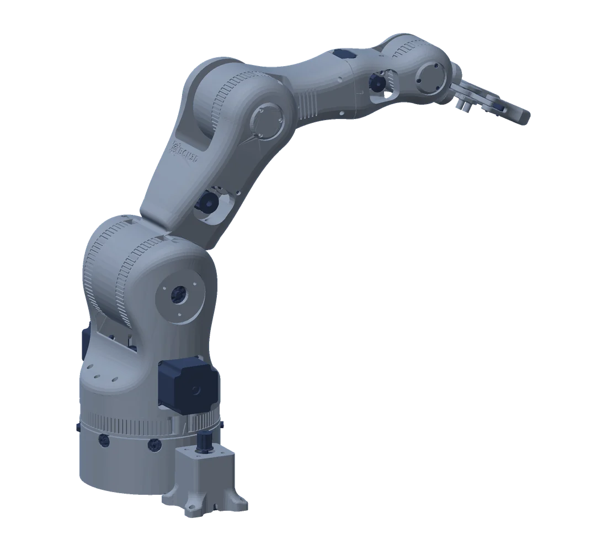

“The hardware is ready. The software isn’t.”
We bring the board to life: first boot, drivers, operating system and a working product, with your hardware team in the loop.
Layers 02–04From the first board on the bench to secure software in the field. One partner for the whole stack — so the parts fit, the product ships, and it is ready for the EU Cyber Resilience Act.
We bring the board to life: first boot, drivers, operating system and a working product, with your hardware team in the loop.
Layers 02–04A fixed-scope review shows the gaps in your firmware. Then we close them: secure boot, signed updates, threat model.
Layer 07We make alternative hardware speak the same protocol, so your existing software and tools keep working unchanged.
Layers 05–06Code and architecture review, MISRA and static analysis, then a plan to make the codebase maintainable for years.
Layer 07A sensor node, a medical pump or a vehicle controller: the layers are the same. Most suppliers own one of them and leave you with the gaps in between. We work through all seven.
We choose proven, available parts with you, so your product is not tied to one expensive supplier.
Component choice and second sourcing for gateways, motor drives and sensor nodes, with our partner hardware engineers.
The first power-on of a new board is where schedules slip. We take it from first boot to a working system.
STM32 motor-control boards and Microchip SmartFusion2 SoC FPGA controllers, from first boot to validation.
Board support packages, bootloaders and drivers that make your hardware usable and keep timing exact.
Zephyr drivers, MCUboot bootloaders and FPGA logic for time-critical I/O.
A maintained, secure foundation — Zephyr, FreeRTOS or Embedded Linux — instead of home-grown code that only one person understands.
Zephyr ports and modules, FreeRTOS, Yocto and Buildroot images with reproducible builds.
Your devices talk to each other reliably — CAN, RS-485, UART, USB — even when the hardware underneath changes.
CAN with ISO-TP for automotive diagnostics, RS-485 for industrial buses, DYNAMIXEL for robotics.
Everything works together end to end, and can be tested on a laptop before the hardware exists.
Firmware run against simulated hardware in CI; device, gateway and PC software tested together.
Code that passes audits and the EU Cyber Resilience Act — secure boot, signed updates, MISRA — built in, not patched on.
MISRA C:2012 gates, 100 % coverage in CI, signed firmware with MCUboot, CRA gap reviews.
We review your current firmware, show you where the gaps are and help you close them before the deadline.
Ask for a CRA gap reviewEach library ships with its MISRA report, test coverage and a PDF manual. Your engineers can check our work before we start.
Several microcontrollers on one wire, and no message is ever lost.
Long messages over CAN for vehicle diagnostics and firmware updates.
Build your own actuators that speak the DYNAMIXEL servo protocol.
Precise motor control that notices a stalled motor without extra sensors.
Each write-up comes with code that rebuilds every number it quotes.

Rendered from CAD7 layers Featured case study · Robotics Runs in simulationRobot software written for premium servos now runs — unchanged — on low-cost motors and a 3D-printed arm. Take it apart layer by layer, follow one command from the operator’s click to the motor, and compare three ways to wire it.
7layers, one team 0lines changed in the robot software 3architectures compared Explore the robotDeterministic messaging for several boards on one shared line, running on Zephyr. For machines, sensor networks and building automation.
Explore the article ↗ISO-TP transport for UDS diagnostics, OBD and CAN bootloaders, tested against an independent reference.
Explore ISOTP-C ↗Motor control tested on a PC model before it touches hardware. For pumps, valves, positioning stages and printers.
Explore the article ↗SystemFromScratch® was founded by Anton Vynohradov, an embedded systems engineer based in Poland. Anton leads the engineering; specialist partners join for hardware design and other areas when your project needs them.
We work with industrial IoT, automotive, robotics, medical and consumer electronics teams who need a partner for the whole software stack — firmware, operating system, security and the regulations that govern them.
Start with a short call or a fixed-scope code, MISRA or CRA review of your current firmware.
Email us avynohradov@systemfromscratch.com